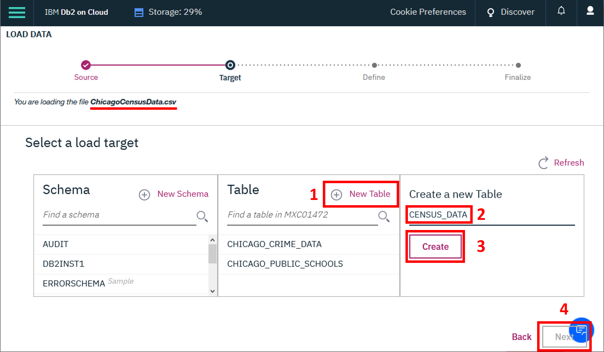

Estimated time needed: 60 minutes
After completing this lab, you will be able to:
Use joins to query data from multiple tables
Create and query views
Write and run stored procedures
Use transactions
In this project, you will work with three datasets that are available on the City of Chicago's Data Portal:
You must download each dataset, create a table for each one, and load the appropiate dataset through the Db2 console. If you have already completed the Hands on Lab: Joins, you can reuse the tables you created for that hands-on lab. However, you should not reuse similar tables with other names from other exercises or labs, as they may not create the correct results.
Important note:
If you have not yet downloaded the three datasets from the City of Chicago's Data Portal, created the required tables, and loaded the data, please follow the instructions in this section.
This dataset contains a selection of six socioeconomic indicators of public health significance and a “hardship index,” for each Chicago community area, for the years 2008 – 2012. A detailed description of this dataset and the original dataset can be obtained from the Chicago Data Portal at: https://data.cityofchicago.org/Health-Human-Services/Census-Data-Selected-socioeconomic-indicators-in-C/kn9c-c2s2
This dataset shows all school level performance data used to create CPS School Report Cards for the 2011-2012 school year. A detailed description of this dataset and the original dataset can be obtained from the Chicago Data Portal at: https://data.cityofchicago.org/Education/Chicago-Public-Schools-Progress-Report-Cards-2011-/9xs2-f89t
This dataset reflects reported incidents of crime (with the exception of murders where data exists for each victim) that occurred in the City of Chicago from 2001 to present, minus the most recent seven days. A detailed description of this dataset and the original dataset can be obtained from the Chicago Data Portal at: https://data.cityofchicago.org/Public-Safety/Crimes-2001-to-present/ijzp-q8t2
The lab requires you to have these three tables populated with a subset of the whole datasets. Download the 'ChicagoCensusData.csv', 'ChicagoPublicSchools.csv', and 'ChicagoCrimeData.csv' datasets below and load the data into your Db2 On Cloud database.
You need to create a new table for each dataset. As you load each dataset, click on "(+) New Table", specify the name of the table you want to create, and then click "Next".
Name the new tables as follows:
After you have created the tables, review the data in each table by using the View Data feature in the Db2 On Cloud console.
You have been asked to produce some reports about the communities and crimes in the Chicago area. You will need to use SQL join queries to access the data stored across multiple tables.
Take a screenshot showing the SQL query and its results.
Take a screenshot showing the SQL query and its results.
For privacy reasons, you have been asked to create a view that enables users to select just the school name and the icon fields from the CHICAGO_PUBLIC_SCHOOLS table. By providing a view, you can ensure that users cannot see the actual scores given to a school, just the icon associated with their score. You should define new names for the view columns to obscure the use of scores and icons in the original table.
| Column name in CHICAGO_PUBLIC_SCHOOLS | Column name in view |
|---|---|
| NAME_OF_SCHOOL | School_Name |
| Safety_Icon | Safety_Rating |
| Family_Involvement_Icon | Family_Rating |
| Environment_Icon | Environment_Rating |
| Instruction_Icon | Instruction_Rating |
| Leaders_Icon | Leaders_Rating |
| Teachers_Icon | Teachers_Rating |
Write and execute a SQL statement that returns all of the columns from the view.
Write and execute a SQL statement that returns just the school name and leaders rating from the view.
Take a screenshot showing the last SQL query and its results.
The icon fields are calculated based on the value in the corresponding score field. You need to make sure that when a score field is updated, the icon field is updated too. To do this, you will write a stored procedure that receives the school id and a leaders score as input parameters, calculates the icon setting and updates the fields appropriately.
Take a screenshot showing the SQL query.
Take a screenshot showing the SQL query.
| Score lower limit | Score upper limit | Icon |
|---|---|---|
| 80 | 99 | Very strong |
| 60 | 79 | Strong |
| 40 | 59 | Average |
| 20 | 39 | Weak |
| 0 | 19 | Very weak |
IF in_Leader_Score > 0 AND in_Leader_Score < 20 THEN
-- update icon for 0-19
ELSEIF in_Leader_Score < 40 THEN
-- update icon for 20-39
ELSEIF in_Leader_Score < 60 THEN
-- update icon for 40-59
ELSEIF in_Leader_Score < 80 THEN
-- update icon for 60-79
ELSEIF in_Leader_Score < 100 THEN
-- update icon for 80-99
END IF;
Take a screenshot showing the SQL query.
Take a screenshot showing the SQL query and its results.
You realise that if someone calls your code with a score outside of the allowed range (0-99), then the score will be updated with the invalid data and the icon will remain at its previous value. There are various ways to avoid this problem, one of which is using a transaction.
Take a screenshot showing the SQL query.
Take a screenshot showing the SQL query.
Run your code to replace the stored procedure.
Write and run one query to check that the updated stored procedure works as expected when you use a valid score of 38.
Write and run another query to check that the updated stored procedure works as expected when you use an invalid score of 101.
You can now write advanced SQL statements to query data from multiple tables, to obscure sensitive data from users, and to control how information is updated in your tables.
Rose Malcolm
| Date | Version | Changed by | Change Description |
|---|---|---|---|
| 02-July-21 | 1.2 | Lakshmi Holla | Made changes in Hint section. |
| 27-Jan-21 | 1.1 | Rose Malcolm | Added instructions to go to Exercise 1 if tables already created and poplulated. |
| 05-Jun-20 | 1.0 | Rose Malcolm | Initial version created |